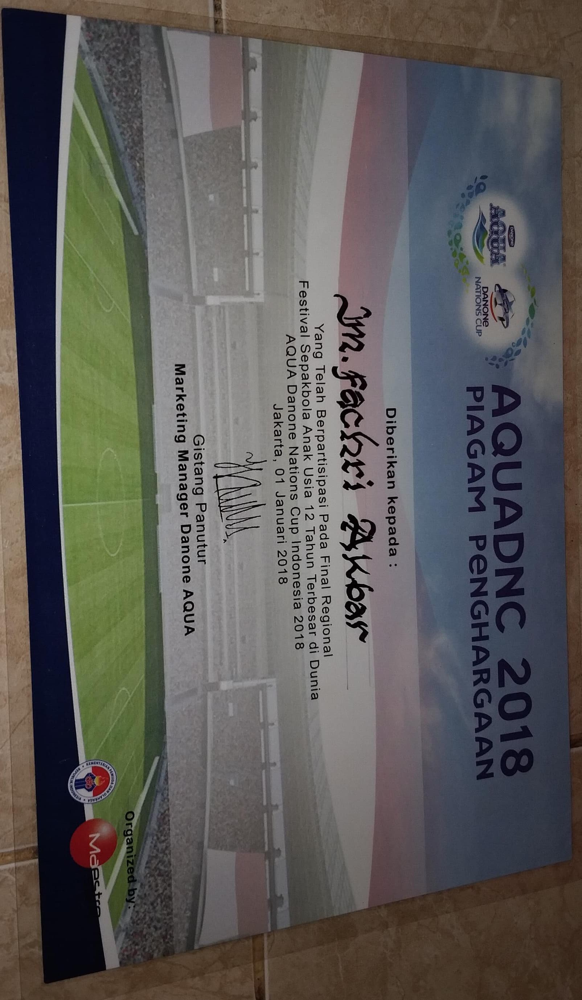
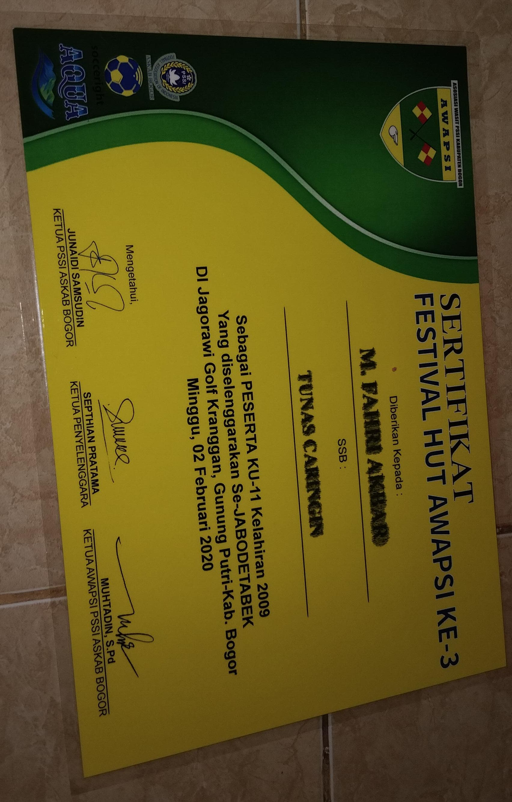
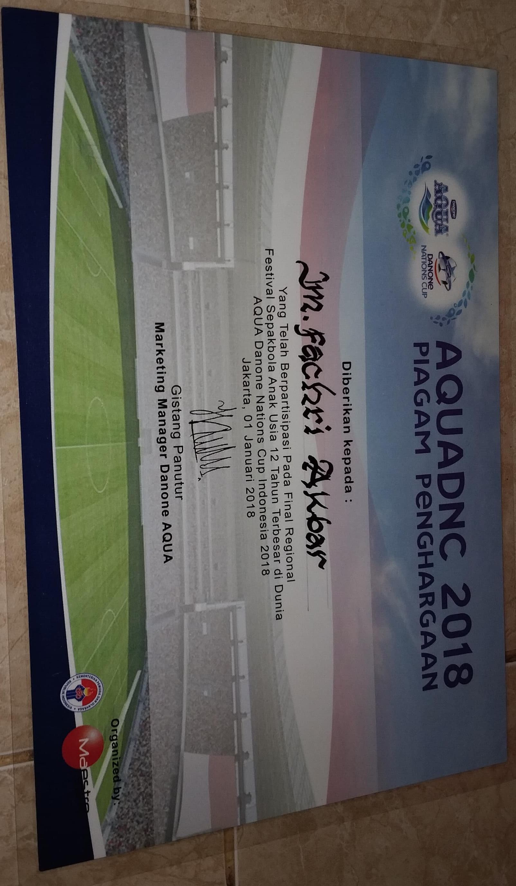
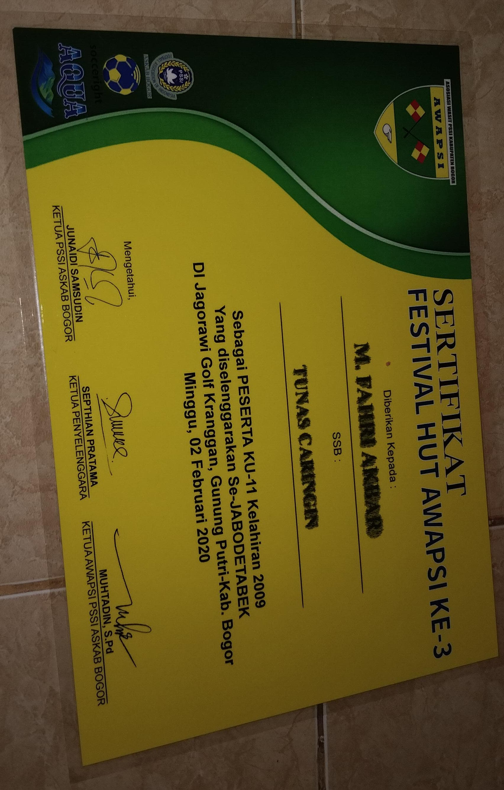

Profil
saya adalah Seorang pelajar dari SMK Wikrama Bogor
keahlian saya yaitu Teknik Jaringan Komputer dan Telekomunikasi
umur saya 15 tahun
hobbi saya mempelajari hal baru
cita cita saya menegtahui apa yang saya tidak tahu
alamat saya kp.pasir muncang rt04/rw02 kecamatan caringin kabupaten bogor
saya anak ke 2 dari 3 bersaudara
Visi
Menjadi seorang profesional yang berkontribusi positif terhadap masyarakat dan lingkungan melalui pekerjaan yang saya lakukan.
Visi Menjadi individu yang berpengetahuan luas dan kompeten, berkontribusi positif terhadap masyarakat melalui pendidikan yang berkualitas dan keterampilan yang relevan, serta menjadi agen perubahan di bidang teknologi.
Misi
Meningkatkan Keterampilan Teknikal misalnya Berkomitmen untuk terus belajar dan menguasai berbagai bahasa pemrograman, alat, dan teknologi terbaru untuk meningkatkan keterampilan teknis yang relevan dalam dunia teknologi.
Inovasi dan Kreativitas: Mengembangkan solusi inovatif untuk permasalahan yang dihadapi masyarakat melalui teknologi, dengan fokus pada penggunaan alat dan teknik yang efisien dan efektif.
Pengembangan Aplikasi Berbasis Pengguna: Membangun aplikasi yang ramah pengguna dan memiliki dampak positif bagi pengguna, dengan fokus pada pengalaman pengguna dan antarmuka yang intuitif.
Beradaptasi dengan Perubahan Teknologi:Selalu siap untuk belajar dan beradaptasi dengan perubahan cepat dalam industri teknologi, agar dapat tetap relevan dan kompetitif di pasar kerja.
Mengimplementasikan Teknologi Berkelanjutan: Mencari cara untuk menerapkan teknologi secara berkelanjutan dan bertanggung jawab, untuk mendukung inisiatif lingkungan dan sosial yang baik.
Peningkatan Kualitas Pendidikan: Menggunakan teknologi untuk meningkatkan kualitas pendidikan, baik dalam pengajaran maupun pembelajaran, dengan memanfaatkan platform online dan sumber daya digital.
Pengalaman
- selama belajar di - Smk Wikrama Bogor (2024-2025)
Saya bisa membuat website dengan menggunakan bahsa pemrograman html dan css Mengelola data dan mengirim data dengan menggunakan file sharing service dengan aplikasi google drive atau gmail
-
saya bisa memecahkan masalah dengan pertimbangan yang matang dan bisa berfikir secara kritis misalnya dengan menganalisis suatu masalah, evaluasi, dan pemecahan masalah dengan cara sistematis dan logis
-
pengalaman proyek pribadi contohnya mengaplikasikan keterampilan yang di pelajari di sekolah dan di terapkan di dunia nyata / di dunia kerja
Pendidikan
- SMK wikrama bogor - (2024- 2027)
saya selama sekolah di smk wikrama bogor saya di ajarkan cyber security, linuc, windows, hacking, dan saya belajar secara otodidak yaitu belajar pemrograman
diajarkan untuk menghitung jumlah gaji, pendapatan, pengeluaran, gaji terbesar, gaji terkecil, tunjangan, jumlah lembur dengan tabel maupun dengan grafik
Motivasi
- Berusahalan dengan keras sampai mendapatkan sebungkus nasi kotak
Keterampilan
- Pengelolaan Jaringan Komputer
- Keamanan jaringan
- teknologi internet
- pemecahan masalah mampu berpikir kritis dengan mempertimbangkan yang baik dan buruk sebelum mengambil keputusan
- Mampu menguasai Microsoft Office yang meliputi (WORD, EXCEL, POWERPOINT) Pengolahan data, membuat, mengedit dokumen (WORD) analisis dan pengolahan data dengan menggunakan rumus dan fungsi dan mampu membuat grafik dan tabel pivot untuk analisis data (EXCEl) mampu membuat presentasi merancang slide presentasi, mengatur tata letak dan menyampaikan ide dengan visual yang jelas (PowerPoint)
Prestasi
- Sepak bola
- Juara 1 kota bogor
- Juara 2 kota bogor
- Juara 4 jabodetabek
- juara 2 bogor
- Juara 1 kabupaten bogor
- juara 3 kabupaten bogor
- juara 4 kota bogor
- futsal
- juara 1 bogor selatan
- juara 2 kabupaten bogor
- juara 2 aafi bogor
- juara 4 bogor selatan
- juara 4 bogor selatan
- juara 3 bogor selatan
Sertifikasi


 




.jpg)